The point of deep learning is to sequentially learn better feature representations, and use these to solve a task.
Since neural networks are universal function approximators, they can model arbitrarily complex relationships. The cost of doing so, is that we need a lot of data.
The feed-forward neural network
For the demo we used the good ol’ fully-connected feed-forward network:
Each node computes an output by
\[
\small
y = f\left( \sum_{i=1}^{n} w_ix_i + b \right)
\]
where
\(w_i\) is the weight of each incoming connection
\(b\) is the bias term
\(f\) is the activation function (more next week)
Image classification
Let’s classify this image: (see notebook 1)
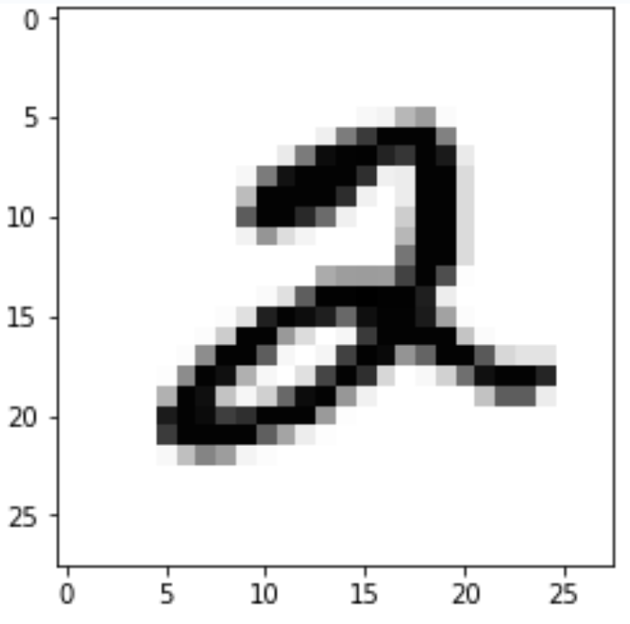
Image classification
Let’s classify this image: (see notebook 1)
Try to treat every pixel as feature:
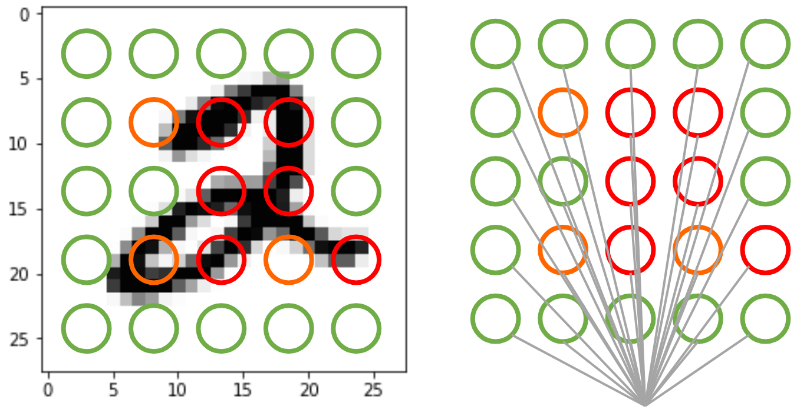
2
Image classification
Let’s classify this image: (see notebook 1)
Try to treat every pixel as feature:
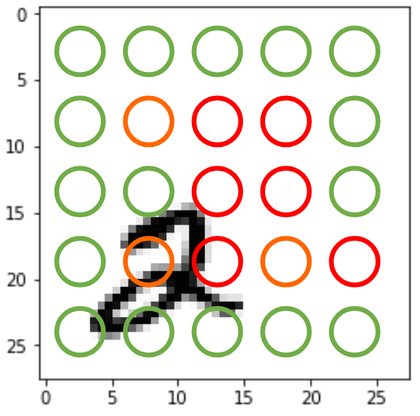
not 2
Two obvious problems:
Not invariant under translation (move the image different result)
Not invariant under dilation (resize the image different result)
Enter the convolution operation
The foundation for modern computer vision (plus lots of other things!) is convolution:
an operation that takes in two functions and returns a new function
\[
f \ast g \equiv \int_{-\infty}^{\infty} f(\tau) g(t-\tau) d\tau
\]
Enter the convolution operation
The foundation for modern computer vision (plus lots of other things!) is convolution:
an operation that takes in two functions and returns a new function
\[
f \ast g \equiv \int_{-\infty}^{\infty} f(\tau) g(t-\tau) d\tau
\]
In practice, convolution is a way to recognise and localise patterns in data
Discrete convolution
Convolution is a lot easier with discrete data such as images, because:
the integral becomes a sum
the first function is our image
the second function is our kernel or filter, which tries to find patterns in the image.
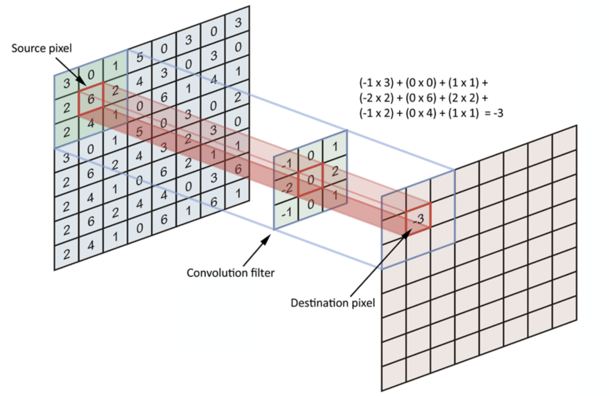
Convolution over images
Simple case – one input channel
Convolution over images
For RGB color images: Process each color channel, then sum
The convolution kernel (or filter)
Convolution with predefined kernels is the core to digital image processing (but then we call it filters)
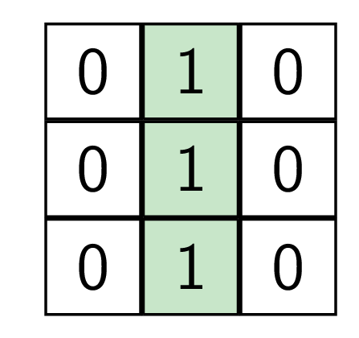
Identify vertical lines
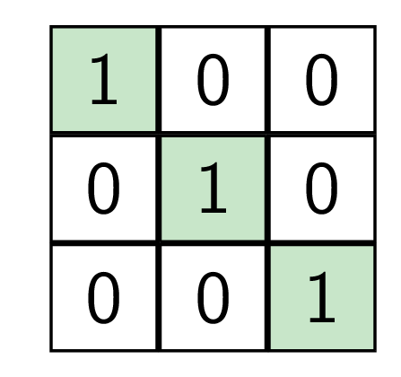
Identify diagonal lines
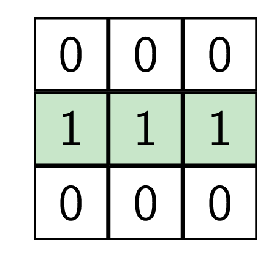
Identifiy horizontal lines
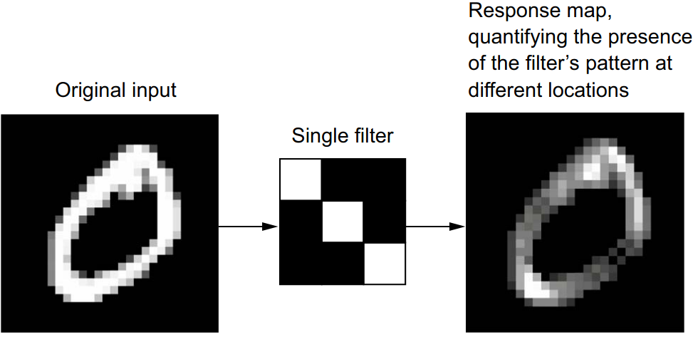
More filters
Average: Blurring effect
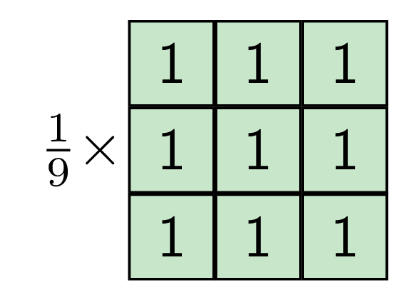
Sobel filter: Edge detector
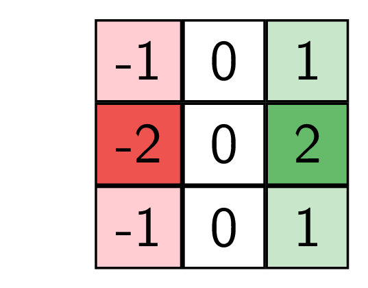
Kernels for image recognition
Let’s try handcrafting some filters/kernels:
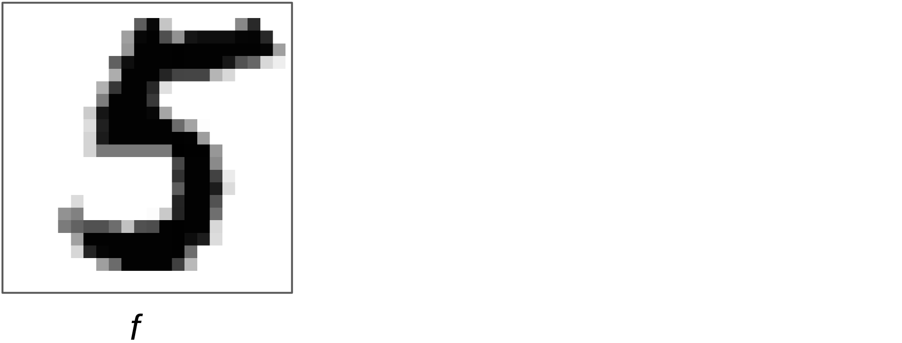
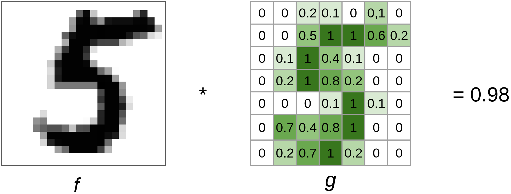
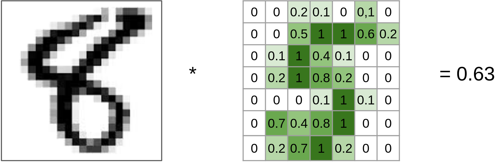
Need to refine the approach :/
Decomposition into simple patters
A better approach: Multiple small filters
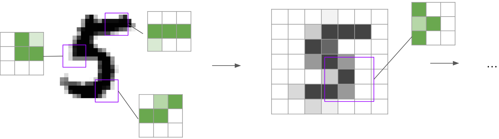
Original image
New image, in lower resolution
Repeat
Decomposition into simple patters
Talk is cheap. Show me the code
Keras layers
For our proposed solution we need three layer types:
Convolution layers to extract image features
keras.layers.Conv2D
Pooling layers to downsample and aggregate the features
keras.layers.MaxPooling2D
Fully-connected (dense) layers to compute the final prediction
Decomposition into simple patters: Theory vs practice
Remember the cat:
(We’ll try to classify pictures of cats in exercise 3, but let’s test out a cat detector convnet already now)
Decomposition into simple patters: Theory vs practice
Our test image:
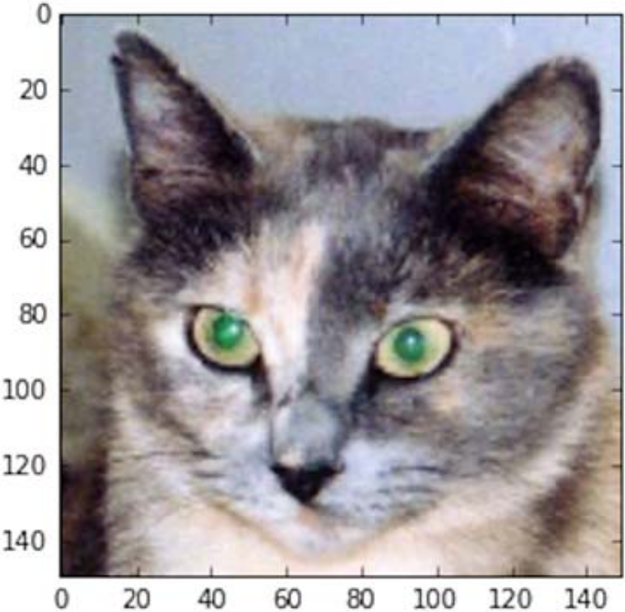
From F. Chollet: Deep Learning with Python
Layer activations
We can visualise what each filter does by looking at its activation on the test image: The output after the convolution and applying the activation function.